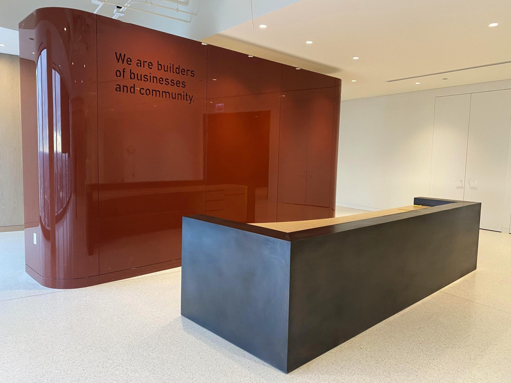
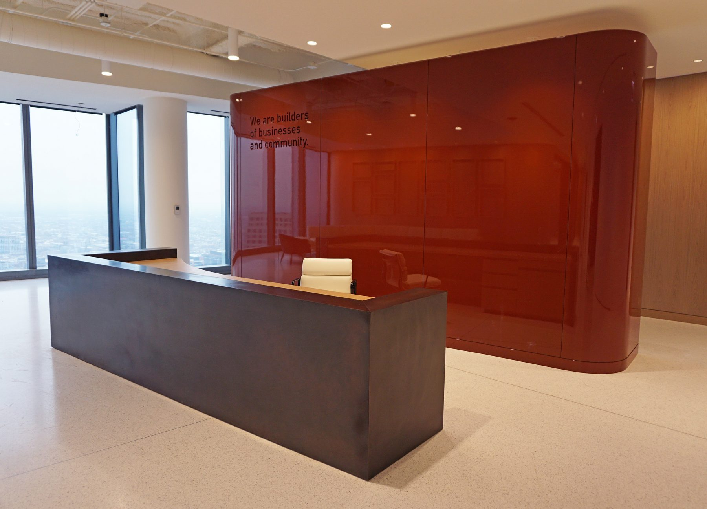
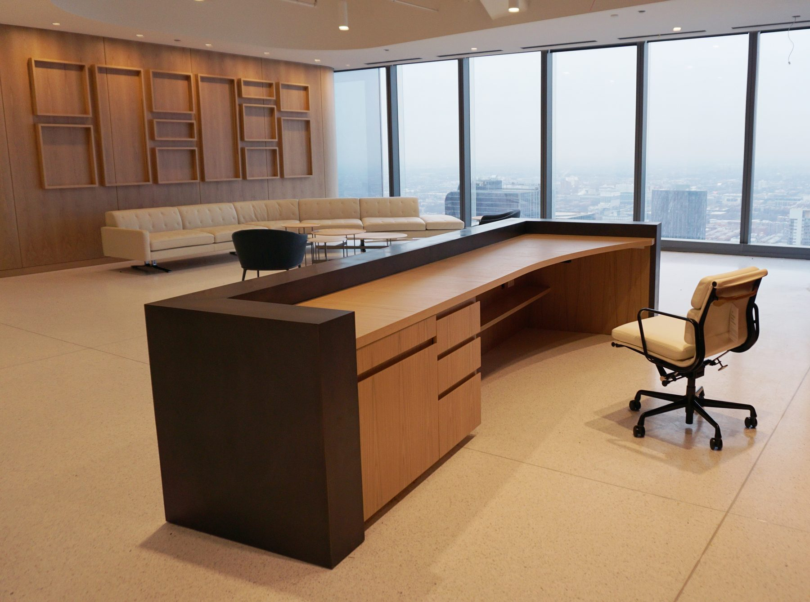
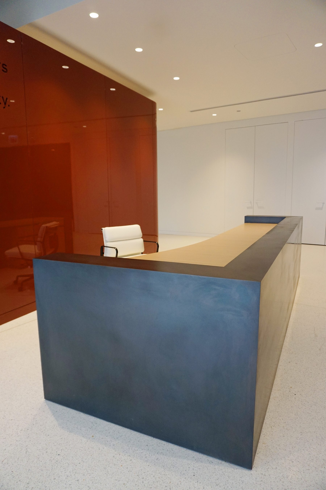

Architectural / 2020
Pritzker Group Reception Desk
Bronze clad desk and credenza
Bronze clad reception desk and bronze framed credenza for the Pritzker Group offices.
Bronze clad reception desk and bronze framed credenza created for the Pritzker Group offices in Chicago. Developed and executed by ChiLab in collaboration with Imperial Woodworking and Lazuli Studio at the direction of Gensler.
Details
- Year
2020 - Location
Chicago, IL - Category
Architectural - Materials
Bronze, patina, hardwood
Credits
- Direction: Gensler
- With Imperial Woodworking and Lazuli Studio
Index




